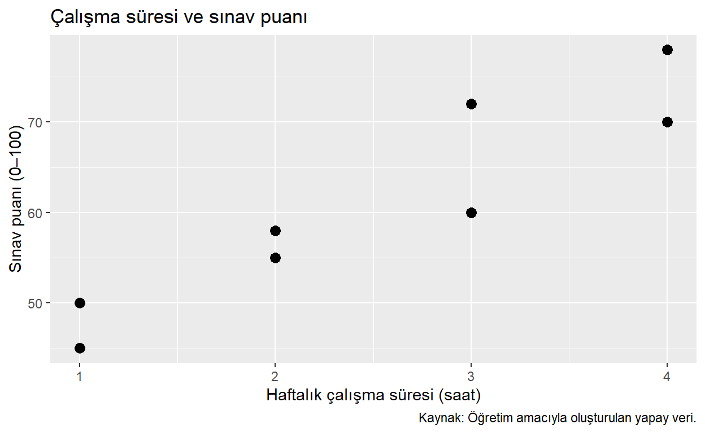
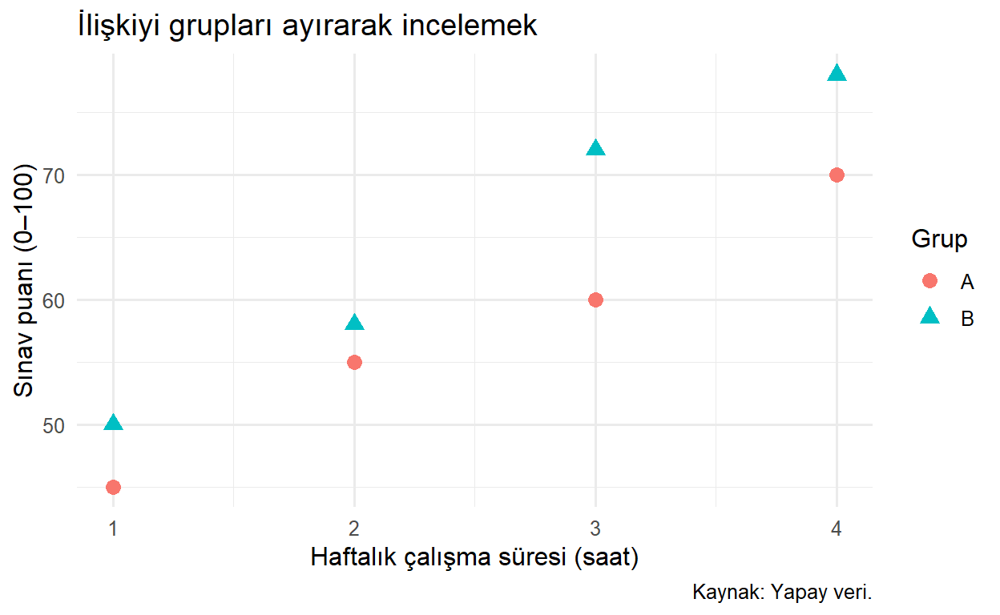
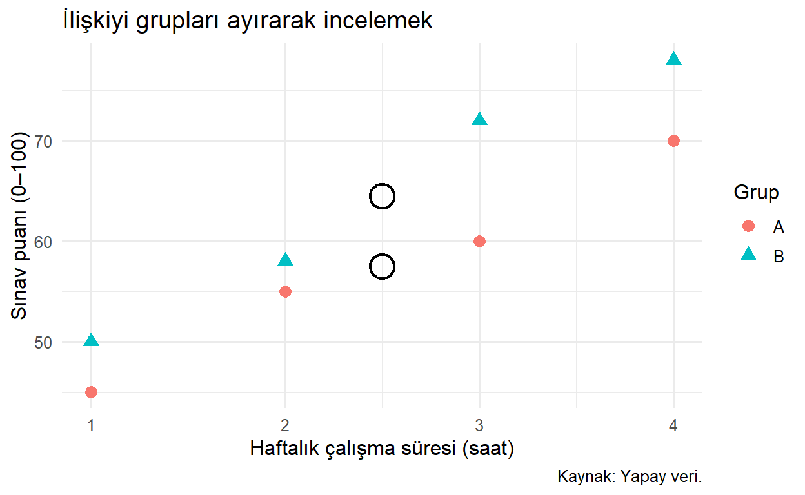
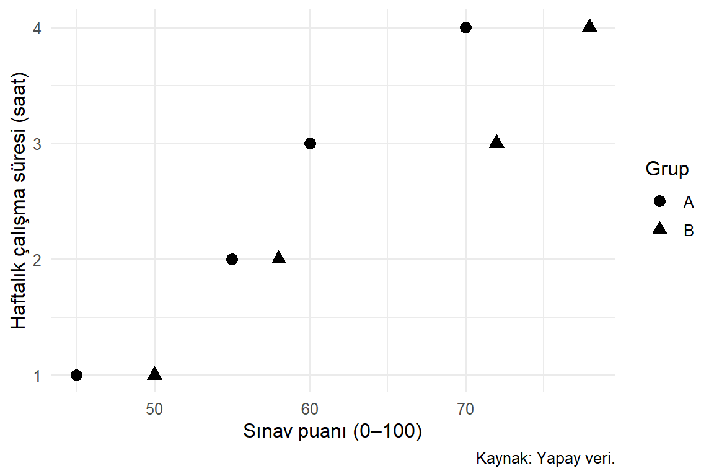

install.packages("ggplot2")22 ggplot2 Temelleri
Bölüm 21 bölümünde iyi bir grafiğin bir sorudan başladığını gördük. Şimdi bu soruyu R’de bir grafiğe dönüştürmenin dilini öğreneceğiz. Amacımız hazır bir kodu ezberlemek yerine, grafiği oluşturan parçaların görevlerini anlamaktır.
ggplot2, grafiklerin ortak bileşenlerle kurulabileceği düşüncesine dayanır. Farklı grafik türleri birbirinden bütünüyle bağımsız komutlar değildir: veriyi seçer, değişkenleri görsel özelliklerle eşler, gözlemleri hangi geometrik biçimle göstereceğimizi belirleriz. Grafik grameri bu ortak yapıyı tarif eder (Wickham 2016). Bu yaklaşım, “hangi düğmeye basmalıyım?” sorusunun yerini “hangi bilgiyi hangi görsel özellikle temsil ediyorum?” sorusuna bırakır.
22.1 Öğrenme Hedefleri ve Ön Koşullar
Bu bölümün sonunda ggplot(), aes() ve geom_point() ile bir grafik kurabilecek; eşleme ile sabit ayarı ayırabilecek; katmanların veriyi nasıl devraldığını açıklayabilecek ve bir grafik nesnesini yeniden kullanabileceksiniz. Veri çerçevesi, fonksiyon çağrısı ve temel sütun adlandırma bilgisi yeterlidir.
22.2 Paketi Kullanıma Hazırlamak
Paketin kurulması ile oturuma yüklenmesi farklı işlemlerdir. install.packages() paketi bilgisayara kurar; library() kurulu paketi geçerli R oturumunda kullanıma açar. Aşağıdaki kurulum komutu yalnızca paket kurulu değilse kullanıcı tarafından çalıştırılır; kitabın render sürecinde paket kurulmaz.
Örnekler için küçük bir yapay öğrenci tablosu hazırlayalım. Her satır bir öğrenciyi, calisma_saati haftalık çalışma süresini, puan 0–100 aralığındaki sınav puanını gösterir. Veriler gözlemsel bir araştırmadan alınmamıştır.
library(ggplot2)
ogrenciler <- data.frame(
ogrenci = paste0("Ö", 1:8),
grup = rep(c("A", "B"), each = 4),
calisma_saati = c(1, 2, 3, 4, 1, 2, 3, 4),
puan = c(45, 55, 60, 70, 50, 58, 72, 78)
)
ogrencilerBu tabloda grup bir kategori, çalışma saati ve puan sayısal değişkendir. Öğrenci adı bir kimliktir; adları sayısal bir eksen gibi kullanmayacağız. Az sayıda gözlemle çalışmak, kodun hangi noktayı ürettiğini takip etmemizi sağlar.
22.3 Grafiğin Bileşenleri
| Bileşen | Sorduğu soru | Örnek |
|---|---|---|
| Veri | Hangi gözlemler çizilecek? | ogrenciler |
| Estetik eşleme | Hangi değişken hangi görsel özelliğe bağlanacak? | aes(x = calisma_saati, y = puan) |
| Geometri | Gözlemleri hangi işaretlerle göstereceğiz? | geom_point() |
| İstatistiksel dönüşüm | Ham değer mi, hesaplanan özet mi çizilecek? | Sayım, histogram aralıkları |
| Ölçek | Değerler konum ve renge nasıl dönüştürülecek? | Doğrusal veya logaritmik eksen |
| Koordinat sistemi | Grafik hangi uzamsal düzende gösterilecek? | Kartezyen eksenler |
| Facet | Veri hangi alt panellere ayrılacak? | Her grup için bir panel |
| Tema | Veri dışındaki görünüm nasıl düzenlenecek? | Yazılar ve ızgara çizgileri |
İlk üç bileşenle başlayacağız. Diğer bileşenlerin bir kısmı varsayılan olarak belirlenir. Böylece başlangıçta bütün ayrıntıları yazmadan anlamlı bir grafik oluşturabiliriz. Varsayılanların bulunması, bunların her soruya uygun olduğu anlamına gelmez.
22.4 İlk Grafiği Adım Adım Kurmak
Sorumuz: Bu yapay öğrencilerde çalışma süresi ile puan birlikte nasıl değişiyor? İki sayısal değişkenin ilişkisini görmek için saçılım grafiği seçeceğiz.
# data hangi tabloyu, mapping hangi eşlemeleri kullanacağımızı belirtir.
temel_grafik <- ggplot(
data = ogrenciler,
mapping = aes(x = calisma_saati, y = puan)
)ggplot() bir grafik nesnesi başlatır. data varsayılan tabloyu, mapping ise aes() ile oluşturulan varsayılan görsel eşlemeleri alır. Henüz bir geometri eklemediğimiz için gözlemleri çizen katman yoktur. Nesneyi <- ile kaydetmek de tek başına ekrana çizmez.
ilk_grafik <- temel_grafik +
geom_point(size = 3) +
labs(
title = "Çalışma süresi ve sınav puanı",
x = "Haftalık çalışma süresi (saat)", y = "Sınav puanı (0–100)",
caption = "Kaynak: Öğretim amacıyla oluşturulan yapay veri."
)
ilk_grafik
geom_point() her gözlemi bir noktayla gösterir; size = 3 noktaların büyüklüğünü sabitler. labs() başlıkları ve açıklamaları belirler. title ana başlık, x ve y eksen adları, caption alttaki açıklamadır. Bunlar verideki değerleri değiştirmez.
Şekil 22.1 içinde çalışma süresi arttıkça puanın da yükseldiği görülür. Bu verileri öğretim amacıyla biz oluşturduk. Grafik bir eğitim müdahalesinin etkisini ölçmez; gerçek dünyada aynı örüntünün oluşacağını da kanıtlamaz.
22.4.1 + ile |> Aynı İşlemi Yapmaz
+, ggplot nesnesine katman veya başka bir bileşen ekler. Satır sonunda kullanmak, R’ye ifadenin devam edeceğini bildirir. |> ise soldaki nesneyi sonraki fonksiyona iletir. Veriyi hazırlarken pipe, grafiği kurarken + kullanabiliriz:
a_grubu <- ogrenciler |>
dplyr::filter(grup == "A")
a_grafigi <- ggplot(a_grubu, aes(calisma_saati, puan)) +
geom_point(size = 3)İlk işlem tabloyu süzer; ikinci işlem bu tablodan grafik oluşturur. ggplot() çağrısında sırayı koruduğumuz için data = ve mapping = adlarını kısalttık. Öğrenirken adları açık yazmak yararlı olabilir. aes(calisma_saati, puan) yazımında ilk iki konum sırasıyla x ve y anlamındadır; renk gibi diğer eşlemeleri adlarıyla yazarız (ggplot2, t.y.).
22.5 Estetik Eşleme ve Sabit Ayar
Estetik, ggplot2 bağlamında “güzel görünme” anlamına gelmez. Konum, renk, şekil ve büyüklük gibi veriyle ilişkilendirilebilen görsel özelliklerin ortak adıdır.
Grupları farklı renk ve şekillerle ayıralım. Böylece renkleri ayırt edemeyen okuyucu da şekillerden yararlanabilir.
gruplu_grafik <- ggplot(
ogrenciler,
aes(x = calisma_saati, y = puan, colour = grup, shape = grup)
) +
geom_point(size = 3) +
labs(
title = "İlişkiyi grupları ayırarak incelemek",
x = "Haftalık çalışma süresi (saat)", y = "Sınav puanı (0–100)",
colour = "Grup", shape = "Grup", caption = "Kaynak: Yapay veri."
) +
theme_minimal(base_size = 12)
gruplu_grafik
colour = grup ve shape = grup, aes() içinde oldukları için grup değerlerini görsel özelliklere bağlar. ggplot2 uygun ölçekleri ve lejantı üretir. size = 3 ise aes() dışındadır: büyüklük bir değişkenden gelmez ve bütün noktalar için aynıdır.
| Yazım | Anlamı |
|---|---|
aes(colour = grup) |
Renk grup değerine göre değişir. |
geom_point(colour = "steelblue") |
Bütün noktalar belirtilen renkte çizilir. |
aes(colour = "steelblue") |
Sabit metin bir kategoriye eşlenir; adı steelblue olan bir lejant üretilebilir. |
aes(size = calisma_saati) |
Nokta büyüklüğü çalışma süresini temsil eder. |
geom_point(size = 3) |
Nokta büyüklüğü sabittir. |
Son iki yazımın ikisi de geçerlidir; farklı soruları yanıtlarlar. Bu örnekte çalışma süresi zaten yatay eksendedir. Aynı bilgiyi ayrıca büyüklüğe yüklemek gerekli değildir.
İpucuSütun adlarını doğrudan yazın
aes(x = calisma_saati) yazımı sütunu katmanın verisi içinde arar. aes(x = "calisma_saati") aynı şeyi yapmaz; tırnak içindeki metin bir sabittir. aes(x = ogrenciler$calisma_saati) gibi dış tabloya bağlanan yazımlardan da kaçının: katmanın verisi değiştiğinde eşleme beklenmedik biçimde davranabilir.
colour ve color aynı estetik adının iki yazımıdır. Kitapta tutarlılık için colour kullanacağız. fill ise içi doldurulabilen geometrilerin dolgu rengidir. Örneğin sütunlarda dolgu ile kenarlık ayrıdır; bütün nokta şekilleri fill kullanmaz. Fonksiyonun desteklediği estetikleri yardım sayfasından kontrol etmek gerekir.
22.6 geom_point() Argümanlarını Okumak
Bir fonksiyonun bütün seçeneklerini ilk kullanımda ezberlememiz gerekmez. Önce veri akışını etkileyen argümanları, sonra görünüm ayarlarını ayıralım.
| Argüman veya ayar | Görevi | Bu bölümdeki kullanım |
|---|---|---|
mapping |
Katmana özgü aes() eşlemeleri |
Gerekirse genel eşlemeye eklenir. |
data |
Katmana özgü veri | Verilmezse grafiğin verisi kullanılır. |
inherit.aes |
Genel eşlemelerin devralınması | Varsayılan TRUE; bağımsız katmanda FALSE olabilir. |
size |
Nokta büyüklüğü | Sabit örnek: size = 3 |
alpha |
Saydamlık; 0 görünmez, 1 opak | Örtüşmede alpha = 0.6 denenebilir. |
shape |
Noktanın biçimi | Sabit veya kategoriye eşlenmiş olabilir. |
na.rm |
Eksiklerin çıkarılma uyarısı | TRUE eksikleri doldurmaz; uyarıyı susturur. |
show.legend |
Katmanın lejanta katılması | FALSE bu katmanın lejant gösterimini kapatır. |
size gibi bazı görünüm ayarları fonksiyonun ... argümanı üzerinden aktarılır. ..., her yazımın geçerli olduğu anlamına gelmez. Desteklenmeyen bir argüman uyarı verebilir ve istenen etkiyi oluşturmayabilir. Nokta geometrisinin resmî belgesi kullanım imzasını, argümanları ve desteklenen estetikleri ayrı başlıklarda verir.
22.7 Katmanlar ve Eşlemelerin Devralınması
Sorumuz: Ham gözlemler ile grup ortalamalarını aynı grafikte görebilir miyiz? Önceki gruplu grafiğe, ayrı tablodan hesaplanan büyük ortalama noktaları ekleyelim.
ortalamalar <- aggregate(
cbind(calisma_saati, puan) ~ grup,
data = ogrenciler,
FUN = mean
)
ortalamalarcbind() iki sayısal sütunu aynı özetleme işlemine alır. Formüldeki ~ grup, ortalamaların her grup için ayrı hesaplanmasını ister. Buradaki ortalama noktası iki değişkenin aritmetik ortalamasıdır; gerçek bir öğrenciyi temsil etmek zorunda değildir.
katmanli_grafik <- gruplu_grafik +
geom_point(
data = ortalamalar,
mapping = aes(x = calisma_saati, y = puan),
inherit.aes = FALSE,
shape = 1, size = 6, stroke = 1.2, colour = "black"
)
katmanli_grafik
Yeni katmanda data değişti. inherit.aes = FALSE, genel renk ve şekil eşlemelerini devralmamayı sağlar; katmanın x ve y eşlemelerini yeniden yazdık. stroke, nokta kenarlığının kalınlığıdır. Bu iki büyük nokta 2,5 saatte 57,5 ve 64,5 puandadır. Aradaki fark grup özetidir; müdahale etkisi olarak yorumlanamaz.
Katmanların sırası önemlidir. Son eklenen katman öncekilerin üzerine çizilir. Özet noktalarını önce çizseydik ham noktalar bunları örtebilirdi. Grafik nesnesine yeni katman eklemek, önceki nesneyi kendiliğinden değiştirmez; sonucu yeni bir nesneye atadık.
22.8 Grafik Nesnesini Görüntülemek ve Yardım Almak
Konsolda nesnenin adını yazmak genellikle yeterlidir. Döngü veya fonksiyon içinde görüntülemek için print() kullanmak gerekir. Böylece grafiği üretmekle çizdirmek arasındaki ayrımı koruruz.
print(ilk_grafik)
help("geom_point", package = "ggplot2")
?ggplot2::aesBu blok yardım kullanımını gösterir; etkileşimli yardım penceresi kitap üretimi için açılmaz. Yardım sayfasında önce Usage, sonra Arguments, ardından Examples bölümlerini okuyun. Örnekleri kendi sorunuza uyarlarken verinin ve analiz biriminin değişip değişmediğini kontrol edin.
22.9 Sık Yapılan Hatalar
library(ggplot2)çağrısını unutmak: yeni oturumda fonksiyonlar bulunamayabilir; bölümün kurulum bloğunu çalıştırın.- Sütun adını tırnak içine almak: değişken yerine sabit metin eşlenebilir.
- Sabit rengi
aes()içine yazmak: beklenen renk yerine kategori ölçeği ve gereksiz lejant oluşabilir. +işaretini yeni satırın başına koymak: önceki ifade tamamlanmış sayılabilir; devam işaretini satır sonunda bırakın.na.rm = TRUEile veri sorununu çözdüğünü sanmak: eksikler görünmez olur, nedenleri açıklanmış olmaz.- Her katmanın aynı veriyi kullandığını varsaymak: katman düzeyindeki
datagenel veriyi değiştirebilir.
22.10 Egzersizler
- Kolay:
ggplot(),aes()vegeom_point()görevlerini birer cümleyle açıklayın. - Kolay:
ilk_grafiknesnesinin noktalarını mavi yapmak için renk ayarı nereye yazılmalıdır? Grup rengi istenirse ne değişir? - Orta: Puanı yatay, çalışma süresini dikey eksene koyan ve grupları şekille ayıran bir grafik hazırlayın. Birimleri belirtin.
- Orta:
ggplot(ogrenciler, aes(calisma_saati, puan)) + geom_point(aes(colour = "blue"))kodunun neden bütün noktaları doğrudan maviye boyamakla aynı olmadığını açıklayın. - Orta: Ortalamaların bulunduğu tablodan, ham öğrenciler olmadan yalnızca iki grup ortalamasını çizin. Neden bu grafik dağılımı göstermez?
- Zor: Yeni bir katmanın verisinde
grupsütunu bulunmadığını düşünün. Genel eşlemedecolour = grupvarsa ne sorun oluşabilir?inherit.aes = FALSEile nasıl çözersiniz?
22.11 Egzersiz Çözümleri
Çözüm 1: ggplot() veri ve varsayılan eşlemelerle grafik nesnesini başlatır. aes() değişkenleri görsel özelliklere bağlar. geom_point() nokta katmanını ekler.
Çözüm 2: Sabit renk geom_point(colour = "blue") biçiminde aes() dışında verilir. Grupları ayırmak için aes(colour = grup) kullanılır; renkler ölçek tarafından atanır.
Çözüm 3:
ggplot(ogrenciler, aes(x = puan, y = calisma_saati, shape = grup)) +
geom_point(size = 3) +
labs(
x = "Sınav puanı (0–100)", y = "Haftalık çalışma süresi (saat)",
shape = "Grup", caption = "Kaynak: Yapay veri."
) +
theme_minimal(base_size = 12)
Eksenleri değiştirmek nedensel yönü belirlemez. Hangi değişkenin açıklayıcı olduğu sorudan ve araştırma tasarımından gelir.
Çözüm 4: "blue" metni tek düzeyli bir kategoriye eşlenir. Varsayılan renk ölçeği bu kategoriye bir renk atar; bu rengin mavi olması gerekmez.
Çözüm 5:
ortalama_grafigi <- ggplot(ortalamalar, aes(x = grup, y = puan)) +
geom_point(size = 4) +
labs(x = "Grup", y = "Ortalama puan (0–100)")İki nokta yalnızca iki aritmetik ortalamadır. Grup içi yayılımı veya her grupta kaç öğrenci bulunduğunu bu iki değerden öğrenemeyiz.
Çözüm 6: Katman devraldığı renk eşlemesini kendi verisinde değerlendiremez. Yeni katmana yalnızca gerekli x ve y eşlemelerini verip inherit.aes = FALSE kullanabiliriz. Bu, kayıp grup bilgisini geri getirmez; katmanın başka bir amaçla çizildiğini açıkça belirtir.
22.12 Bölüm Özeti
ggplot2 ile grafik kurmak, veriyi görsel özelliklere eşleyip uygun geometrilerle katmanlar oluşturmaktır. aes() içindeki değişken eşlemesi ile dışındaki sabit ayarı ayırmak, hem doğru kod hem doğru lejant için temel beceridir. Katmanlar genel veri ve eşlemeleri devralabilir; gerektiğinde kendi verilerini ve eşlemelerini kullanırlar.
Bir sonraki bölümde bu dilin farklı araştırma sorularında nasıl kullanıldığını göreceğiz. Grafik türlerini, hangi soruyu yanıtladıkları ve hangi bilgiyi gizleyebildikleri üzerinden inceleyeceğiz.
22.13 Kaynaklar ve Ek Okuma
Grafik grameri ve katman yaklaşımı için (Wickham 2016), başlangıç örnekleri için (Wickham vd. 2023), güncel işlev davranışları için (ggplot2, t.y.) kullanılabilir. Temel başvuru sayfaları: ggplot(), aes() ve geom_point().